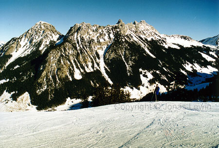

Schweiz, Les Mosses and Lecherette, 2002-01.
|
I'm
going to ski down to the end of the mountain. If you like skiing, the Switzerland is a very nice place to do this. Don't go to Riksgränsen in Sweden. Go to Les Mosses in Switzerland
instead. The trees look a lot smaller down there. |